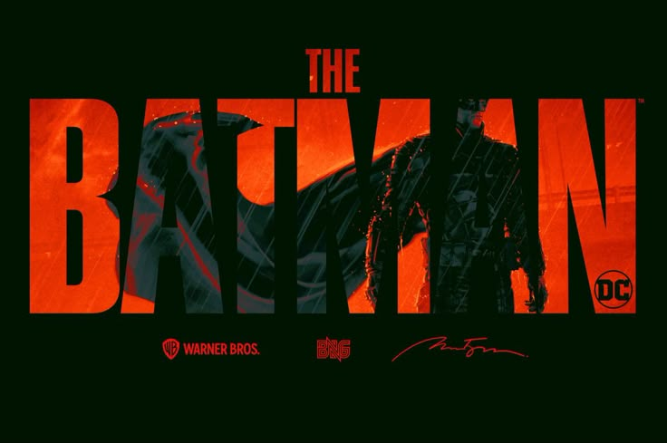

1. Overview & The Challenge
Modern cities are complex ecosystems generating vast amounts of data, yet integrating and acting upon this information in real-time remains a significant hurdle for effective urban management and public safety. Project Gotham Pulse was conceived to address this challenge: creating a unified, real-time intelligence dashboard that transforms raw urban data into actionable insights for critical decision-makers.
The primary challenge involved designing an interface capable of handling high-volume, diverse data streams (e.g., crime statistics, traffic, environmental sensors, public service requests) within a secure, intuitive, and visually impactful system, reflecting the high-stakes environment of a major metropolitan area.
2. User & Context Research
Our research focused on understanding the needs of key urban stakeholders, including emergency services, city planning departments, and public utility managers.
- Stakeholder Interviews: Conducted sessions with [number] city department heads to identify critical information gaps, decision-making bottlenecks, and the types of data most valuable for rapid response.
- Workflow Analysis: Mapped current incident response and urban planning workflows to pinpoint areas where real-time data integration could yield significant efficiencies.
- Environmental Scan: Explored existing smart city platforms and urban data visualization tools to learn from their successes and limitations, particularly regarding scalability and data security.
A recurring theme was the need for a "single pane of glass" view, eliminating data silos and enabling proactive interventions rather than reactive responses. The project's visual identity drew inspiration from the iconic vigilance and high-tech investigative tools associated with Gotham's protector, emphasizing precision, security, and strategic insight.
3. Design Process & Solutions
Our design process for Gotham Pulse prioritized clarity under pressure, data integrity, and a visually immersive experience that supported rapid analysis.
Information Architecture & Data Modeling
We structured the dashboard around critical domains: Public Safety, Infrastructure, and Emergency Response. Data points were categorized and layered on an interactive map, becoming the central hub for intelligence.
Information architecture emphasizing data layering on an interactive map interface.
UI/UX Design: Dark, Detailed, and Decisive
The aesthetic for Gotham Pulse embraced a sophisticated dark mode, emphasizing high-contrast data visualizations and a sleek, technical feel:
- Color Palette: Predominantly deep charcoals and blacks for backgrounds, accented with vibrant blues (for primary data/action), sharp reds (for critical alerts), and subtle greens (for stability/safety indicators).
- Typography: Utilized clean, legible sans-serif fonts with varied weights to establish clear data hierarchy, even in low-light conditions.
- Data Visualization: Custom-designed charts, graphs, and heatmaps were developed to convey complex data trends at a glance, allowing for drill-down capabilities. Visualizing anomalies and trends was key.
Interactive City Map: The Core Command Center
The interactive map is the heart of Gotham Pulse, providing real-time overlays of incidents, resource deployment, and critical infrastructure status. Filters allow users to focus on specific data sets.
Real-time interactive map displaying urban data overlays.
Incident & Anomaly Detection Module
A dedicated module highlights emerging patterns or unusual activities, drawing attention to potential threats or critical system failures using a clear alert system.
Module for detecting and alerting on urban anomalies and incidents.
4. Outcomes & Learnings
Project Gotham Pulse resulted in a robust conceptual framework for a data-driven urban intelligence system, prioritizing user needs in high-pressure environments. The design effectively translates complex data into digestible, actionable insights.
- Enhanced Situational Awareness: Provided a unified view that significantly improved understanding of unfolding urban events.
- Improved Decision Support: The intuitive visualizations and filtering capabilities enabled quicker, more informed decision-making.
- Scalability Considerations: Learned critical lessons about designing for large-scale data ingestion and real-time processing in a visually accessible manner.
This project solidified my expertise in designing for complex data environments and creating impactful UIs that balance aesthetics with critical functionality. Future iterations would explore predictive analytics and AI-driven resource optimization.